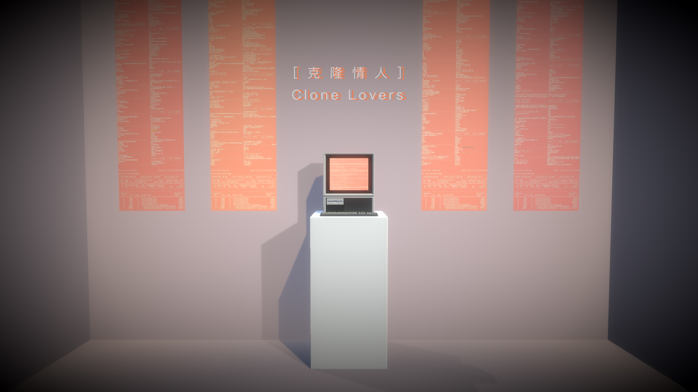
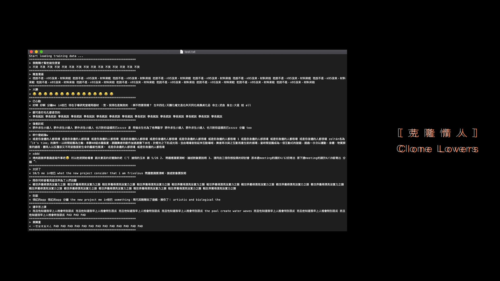

RNN Text Generation
Dataset Curation
Social Data Mining
Interactive Installation
Digital Intimacy
Clone Lovers reflects on how contemporary romantic relationships are shaped through digital communication rather than physical presence. In the age of social platforms, affection is mediated by fragmented text traces, archived histories, and algorithmic curation. People assemble another person’s “personality” not through shared experience but through interpreting incomplete signals, filling gaps with fantasy and projection.
Beginning from personal relational experience, the project “clones” four partners by extracting tens of thousands of chat messages and training an RNN text generator for each. These AI-driven personas do not replicate the real individuals but reassemble them through limited data and algorithmic patterns. By interacting with these text-based clones, viewers encounter the seductive cycle of revisiting, collecting, and re-consuming archived affection—an addictive loop in which intimacy becomes data, and data becomes emotional residue.
The installation consists of a Jetson Nano microcomputer equipped with a keyboard and screen, allowing viewers to send messages to the cloned partners. Each clone is powered by an RNN model trained in Python using PyTorch, with chat histories processed through custom crawling scripts. The trained model outputs text that mimics linguistic structure and tone from the original datasets, though always imperfectly—exposing the limits of algorithmic identity.
